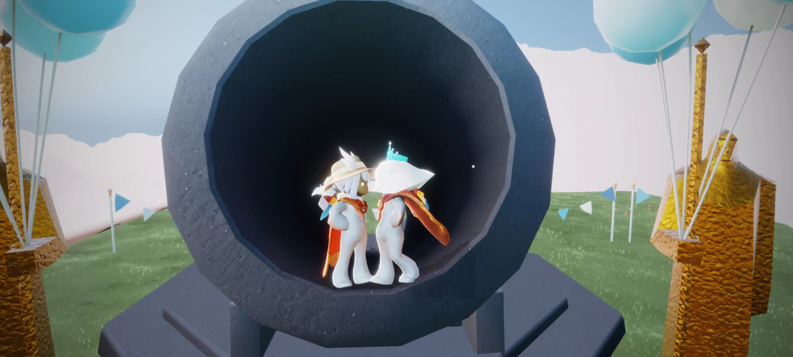

百度一下，你就知道
1.外部链接：
百度
2.内部链接：在网站内部页面之间的相互链接
div and span
3.空链接：#代替地址
空链接
4.下载链接：如果href里面的地址是一个文件或者压缩包(exe或者zip)，会下载这个文件
下载sky文件
5.网页元素链接：网页中的各种网页元素都可以添加超链接(图片，视频，音频...)

6.锚点链接：点击链接快速定位到页面的某个位置--目标地址添加a链接并用id署名
羊羊美照
返回顶部
 返回顶部
返回顶部